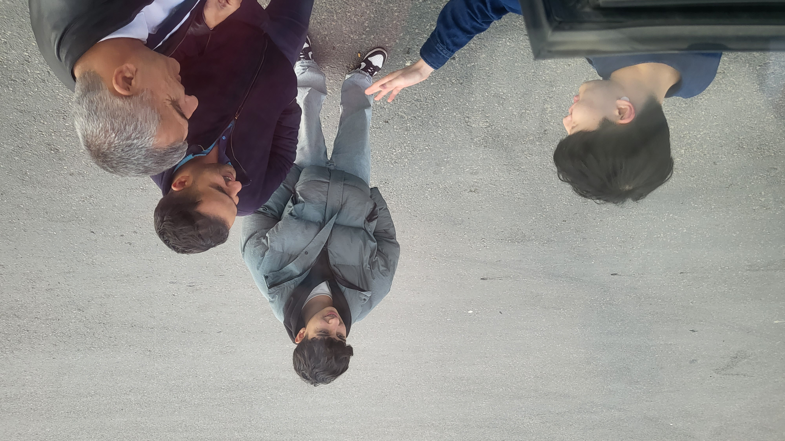
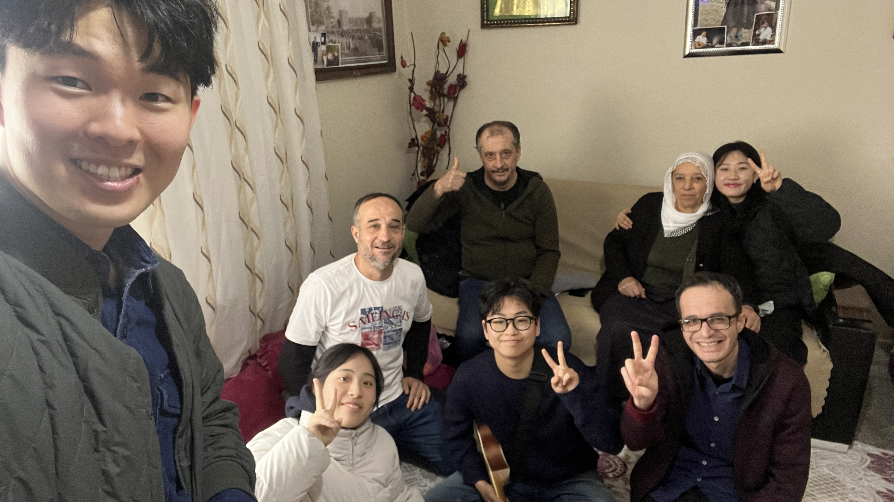
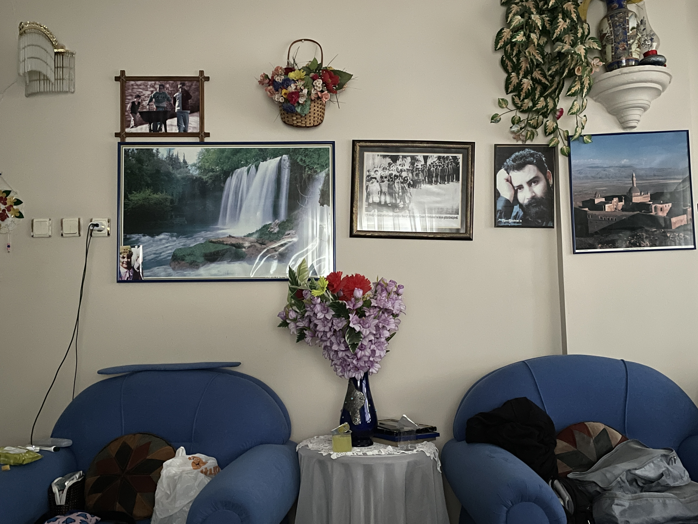
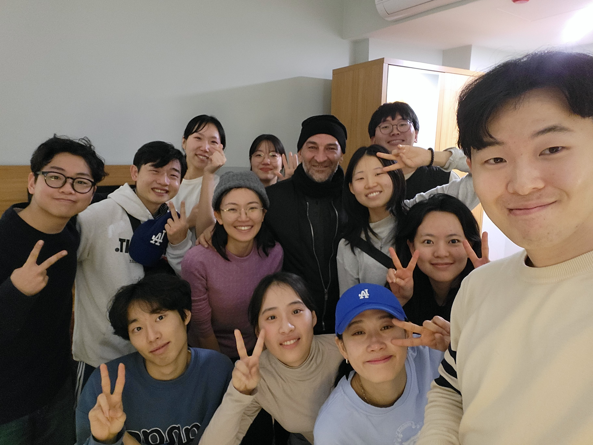
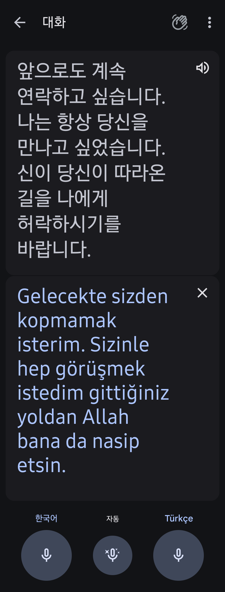
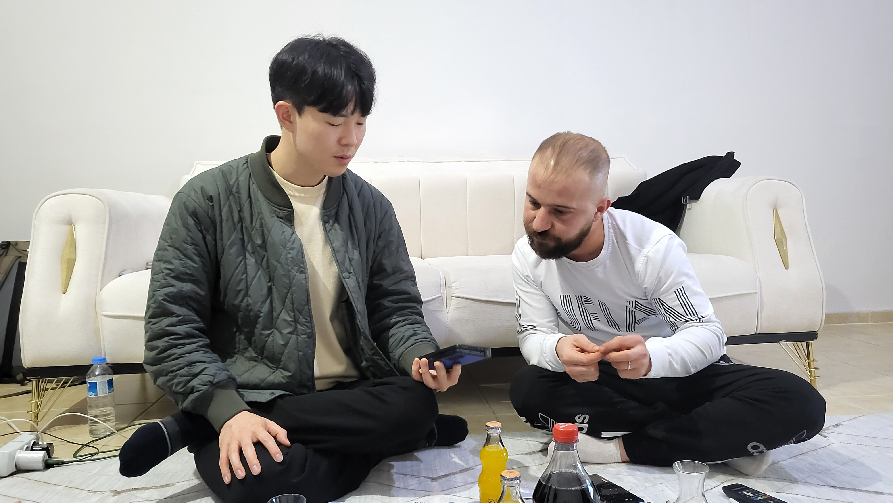
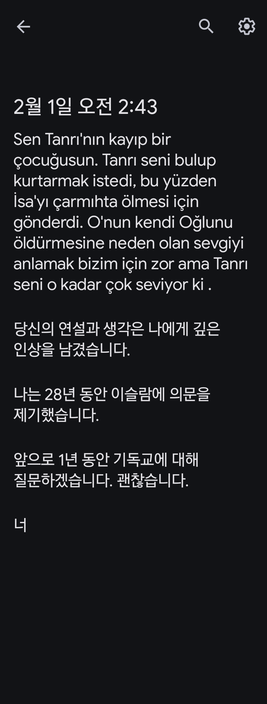

단기
4명이 한 조가 되어 터미널에서 어디로 가야 할지 기도하며 첫날 사역을 시작했습니다. 개인적으로는 가고 싶은 지역이(기독교 유업이 있던 지역) 있었지만 기도하며 계속 S지역이 생각났습니다. 그곳은 당시 있던 곳에서 가장 먼 지역이었기에 가고 싶지 않았지만, 팀원들과 마음을 나누는데, 다른 팀원도 동남쪽에 대한 마음을 받았기에 S지역으로 가야 할지 고민하게 되었습니다(S지역은 당시 우리가 갈 수 있는 곳에서 가장 동남쪽에 있었습니다) 가고싶지 않은 마음에 팀원들에게 한 번 더 기도해 보자 했지만, 이전과 동일한 마음이 나누어져 결국 S지역으로 가게 되었습니다.
오랜 버스를 타고 S지역에 도착했지만, 그날은 생각처럼 일정이 풀리지 않았습니다. 늦은 시간 마을에 도착하기도 했고, 현지인을 만나기도 어려웠습니다. 이상하리만큼 사람들을 만나기 어려운 상황에 더해, 외국인을 처음 본 현지 경찰은 우리를 어떻게 대해야 할지 허둥지둥하며 저희를 호텔에서 머물도록 강권하였기에 더 이상 사람들을 만나지 못하게 되었습니다. 머물게 된 숙소마저 환경이 아주 열악했기에 마음이 어려워진 자매팀원은 집을 가고 싶다고까지 이야기하게 되었습니다. 예비하신 영혼이 있다는 마음을 받아 기도하며 순종함으로 이 지역에 왔지만, 상황과 환경은 우리에게 믿음을 주기보단, 낙담과 좌절을 요구하는 듯 했습니다.

<버스 중간 쉬는 시간에 교제하는 모습>
이 땅을 위해 함께 예배함으로 하루를 마무리하고, 다음날 팀원과 다시 모여 말씀을 묵상하고 기도하며 아침을 맞았습니다. 은과 금이 아닌 가장 귀한 예수그리스도의 이름을 선포할 것에 대해 말씀으로 다시 마음을 새롭게 하고, 이후 기도하며 한 형제 팀원이 나누었습니다. "한 양이 홀로 갇혀있다는 이미지가 떠오르는데, 어떤 건지는 잘 모르겠어요". 그리고 다른 팀원은 바다와 폭포에 대한 꿈을 꾸었다고 나누어주었습니다. 이 이야기를 들은 한 자매 팀원은 폭포나 바다 그림 액자가 걸려있는 집으로 갈 것 같다는 장난 섞인 이야기를 했고, 보수적인 신앙관이 익숙한 저도 나누어진 말들을 다 해석할 수 없었기에 큰 의미를 두지 않은 채 하루를 시작했습니다. 그럼에도 받은 마음들을 기록하며 여정을 시작했는데, 기록하는 것은 은혜를 더욱 풍성히 만든다는 것을 다시 느끼게 해준 시간이었습니다.
전날 어려움으로 S도시를 벗어나고 싶어 하는 팀원도 있었지만, 다른 데 가기에도 이미 여기까지 왔는데 하는 아까운 마음과, 한편으로는 이곳으로 인도하신 뜻이 있을 수도 있지 않을까 하는 마음으로 S도시 안의 K지역으로 정하고 갔습니다. 가는 와중에 배낭의 무게가 있기에, 한 자매 팀원이 쉬고 싶다고 하여 잠시 쉬게 되었습니다. 그러던 중 한 할아버지가 우리를 집으로 초대해 주었고, 둘째 아들인 O형제를 만났습니다. O형제는 이스탄불에서 관광 관련 일을 하여 영어도 할 줄 알았기에, 더 원활하게 우리와 교제할 수 있었습니다. 집으로 가서 음식 대접을 받고 즐겁게 교제한 이후 이 집안의 이야기를 듣는데, 집안에 아픔이 있음을 알게 되었고 이들을 위해 기도해 주는 시간을 가졌습니다. 아들만 3명이 있는 집안인데, 둘째 아들 이외에는 모두 약간의 정신적 아픔과 간질을 가지고 있었습니다. 소식을 듣고 예수그리스도의 이름에 대해서 나눠주며 가정을 위한 기도 허락을 구했는데, 너무나 혼쾌히 허락해 주어 함께 기도해 줄 수 있었습니다

<(O)형제의 가족들과 함께>
치유가 일어나길, 예수그리스도의 이름의 능력이 드러나기를 간구하며 기도했지만 당장의 치유역사는 보지 못했습니다. 하지만 둘째 아들의 표정에는 놀라운 변화가 일어나고 있었습니다. 팀원 모두가 이상하게 여길 만큼, 기도를 마쳤음에도 O형제는 누군가에게 한 대 맞은 표정에서 변화하지 않고 있었습니다. 주님의 만지심이 있었기를 간구함으로 그 시간을 흘려보내며, 따로 O형제와 교제할 기회를 엊게 되어 더 깊은 이야기를 나누었습니다. 알고 보니 O형제의 증조할머니는 기독교인이었고, 튀르키예 국가가 선포되고 무슬림 화 될 때 증조할머니의 가족들이 순교했던 역사가 있었습니다. 본인이 얼마나 증조할머니를 존경하는지 이야기해 주었고, 교제하며 O형제에게 복음을 나눠주었습니다. O형제는 사영리에 기초한 복음에 아멘으로 화답하여 예수님을 자신의 구주로 영접하였고, 눈물을 흘리며 하나님의 살아계심에 대해서, 우리 팀을 하나님이 자기에게 보내셨음을 믿음으로 이야기하였습니다.
가정 가운데 치유가 일어나진 않았지만, 예수그리스도 그 이름의 능력이 선명하게 드러난 그 시간, O형제는 자기의 이야기를 더 나눠주었습니다. 예전부터 집안에 어려움이 있었지만 화목하게 지내려 노력했고 화목한 가정을 이루었다고 합니다. 하지만 주변 사회에서 자기 집안을 공격하는 일들이 많아 자신과 가정이 얼마나 힘들었는지 모른다고 합니다. 게다가 거룩하다고 칭찬받는 몇몇 무슬림들의 위선을 보게되고 오히려 그들이 자신의 집안에 악담을 퍼붓는 힘든 시간을 보내었는데, 본인 안에도 선을 이룰 수 없는 악함을 보게되며 절망하는 시간을 보냈다고합니다. 그리고 O형제는 나눠주었습니다.
"너희를 만나기 이틀 전, 나는 밤에 비를 맞으며 하나님께 살려달라고, 제발 제발 살려달라고 부르짖었었어".
"그렇게 기도했었는데, 오늘 너희들이 나에게 찾아왔어".
"그리고 너희를 만난 그 순간 분터, 나의 삶은 완전히 바뀌었어".
"하나님이 너희를 나에게 보내셨어".
이렇게 눈물로 고백했습니다. 우리는 O형제의 고백 앞에 너무나 놀랄 수밖에 없었습니다. 그리고 우리 팀도 O형제에게 나누어주었습니다.
"하나님이 너를 사랑하시고 구원하길 원하셔서 이 먼 곳으로 우리를 보내셨어". "너의 모든 부르짖음과 아픔을 들으셔서, 우리를 만나게 하시고, 아들을 내어주신 사랑을 알려주길 원하셔". "우리는 헤어지겠지만, 예수그리스도의 이름을 믿고 기도하면, 성령님이 언제나 너와 함께하시고 지켜주실 거야". "예수그리스도의 십자가 사랑이, 너를 언제나 사랑하신다는 하나님의 약속이야"
 <(O)형제와 함께, 떠나기 전에>
<(O)형제와 함께, 떠나기 전에>
이 모든 말에 O 형제는 기쁨으로 반응해주었고, 이후 예수님을 믿는 삶에 대해서와 기초교리에 대해서 나눠주는 시간을 가졌습니다. 이후 연락하며 우리를 만나고 나서 모든 악몽과 나쁜일들이 멈추었고, 그 때 주문한 성경이 곧 도착한다고 최근에 나눠주었습니다. 뿐만 아니라 이제 자신에게 예수님이 있기에 무슬림들이 행할 그 어떤 핍박도 그 어떤것도 두렵지 않다고 고백합니다.
할렐루야..! 선한 목자되신 주님을 찬양합니다. O형제의 부르짖음을 들으셔서 우리 팀을 보내시고, 당신의 사랑을 증거케하십니다. 연약한 자들의 믿음이라도 구원의 통로로 사용하셔서, 잃어버린 당신의 자녀를 되찾으시는 선하신 주님을 찬양합니다.
저와 팀원들은 아직도 이 시간을 잊지 못합니다. 한 영혼을 구원하길 원하시는 하나님의 애통해하시는 사랑과, 잃어버린 양이 주께 돌아올 때 기뻐 춤추시는 하나님의 기쁨의 일부를 누리는 시간이었습니다. O형제와 교제하며 느꼇던 기쁨은 말로 다 표현할 수가 없습니다. 머리카락이 정말 쭈뼛쭈뼛 서는 감격과 심장을 채우는 황홀함은 천국의 기쁨을 짐작하게 해주는 것 같습니다. 복음을 전하고 나서, 자기 전에, 그 방에 폭포 액자가 가장 크게 걸려있고, 거실에 바다 액자가 걸려있는 모습을 발견했을 때는, 정말 연약한 우리의 믿음 가운데도 언제나 함께하셔서 선하게 인도하시고, 상황과 환경을 넘어서 주님의 약속과 말씀 앞에 순종하길 바라시는 주님의 깊은 마음이 있음을 감사함으로 깨닫게 되었습니다.

<잠을 자게 된 방의 사진들>
울타리 안에 갇혀있는 한 양에 대한 팀원의 이야기는, 잃어버린 양을 위해 달려가시는 목자의 말씀을 떠오르게 합니다. 어린양 한 마리를 찾고자 급하게 나선 목자가 감당해야 하는 현실은 분명 만만치 않았을 것입니다. 양들의 안위도 문제이지만, 그보다 먼저 목자조차도 많은 불편함을 감당해야만 했을 것이기 때문입니다. 바로 양을 찾을 수 있다는 확신도 없고, 바로 찾지 못한다면 그동안 자신은 무엇을 먹어야 할지, 어디로 가야 할지, 어떤 위험이 도사리고 있을지, 불편함을 계수하자면 아마 목자는 떠나지 못했을 것 같습니다. 하지만 양을 찾기 위해 드려야 하는 어떤 어려움보다, 찾고자 하는 갈망이 더 크기에, 찾을 때의 기쁨이 그 어떤 어려움과 비교할 수 없기에 목자는 나아갑니다.
작게나마 믿음을 드린 우리 팀의 순종 가운데, 하나님은 이 목자의 기쁨이 무엇인지 알게 하시고, 당신의 잃어버린 아들을 되찾으십니다. 어제부터 계속 고생하고 잠도 잘 못 자서 힘들다고 불평했던 우리의 입술에서, 하나님의 선하심과 신실하신 사랑을 고백하게 하십니다. 이전의 어떤 어려움도 기억나지 않을 정도의 하늘의 기쁨을 부어주셔서, 상황을 넘어 약속을 이루시는 주님을, 한 영혼을 천하보다 사랑하시는 선한 목자되신 주님을, 열방의 아픔을 들으시고 책임지시는 아버지되신 하나님을 보게 하시고 찬양케 하십니다.


<(P)형제와 형제의 고백>
이외에도 놀라운 간증이 너무나 많습니다. 19년간 숨어서 예수님을 믿던 P형제를 만나게 하셔서, 자신의 기도응답이 드디어 들어졌다고 고백하며(프로테스탄트, 개신교인을 만나는 것이 기도제목이였던 것), 본인은 죽을까 두려워 믿음을 드러내지 못하지만, 자신도 우리 팀과 같이 복음 전하는 삶을 살고 싶다는 고백을 듣게 하시고 서로의 믿음을 격려케 하셨습니다. 또한 Y형제를 만나게 하셔서 하나님에 대한 오해를 풀게 하시고(심판하시는 하나님에 대한 두려움을 가지고 있어, 아들을 내어주신 하나님의 사랑을 나누었음), 지금 당장 영접하긴 어렵지만 본인이 앞으로 1년간 예수님을 알아보고 교회에 가보겠다고 합니다. 그리고 왜 이제야 나타나서 아들 예수그리스도를 죽인 하나님의 사랑을 알려주냐고, 지금까지 소망이 없어 죽고 싶을 때 뭐 했냐는 아픈 질책을 듣게 하셨습니다.
참으로 이 땅 가운데 복음을 전하기 위해 대가를 감당하는 목자가 없다는 것을 새삼 느끼게 됩니다. 영접한 O형제가 사는 K마을은 9만 명이 살고있지만, 믿음을 가진자는 본인 혼자일 거라 이야기합니다. P형제가 사는 마을은 약 40만 명이 살고 있지만 믿는 사람은 30명뿐 이라고 이야기합니다. 그리고 Y형제가 사는 마을에는 기독교인이 없고, 만난 적도 없다고 합니다.


<(Y)형제와 형제의 고백>
"그런즉 그들이 믿지 아니하는 이를 어찌 부르리요 듣지도 못한 이를 어찌 믿으리요 전파하는 자가 없이 어찌 들으리요" (롬10:14)
목자 없는 저 민족을 위해 함께 기도해 주고, 복음을 전하기 위해 순종할 자들이 너무나 필요합니다. 양을 되찾기 위해 여러 불편함이 있겠지만, 앞서 달려가셨던 목자 되신 예수님을 따라 함께 나아가는 세대가 일어나기를 같이 기도해 주세요. 양을 되찾기 위해 뛰어난 전략이나, 준비된 어떤 것들이 없더라도 또한 여러 현실적인 제약이 있더라도, 한 영혼을 구원하기 위해 순종함으로 달려 나가는 무수한 자들이 일어나, 하늘의 기쁨이 우리를 넘어 온세계와 열방 가운데 가득하기를 소망합니다.
복음이 없는 열방에 예수그리스도의 사랑을 증거하는 이 여정 가운데, 기도와 후원으로 함께 해주셔서 다시 한번 감사드립니다. 중보자님의 기도와 후원으로 인해, 잃어버린 하나님의 자녀가 주님께 돌아오게 됨을 보게 됩니다. 쿠르드 민족, 팔레스타인 민족, 열방가운데 선한 목자가 세워지기까지 함께 기도해 주시길 간곡히 부탁드립니다.